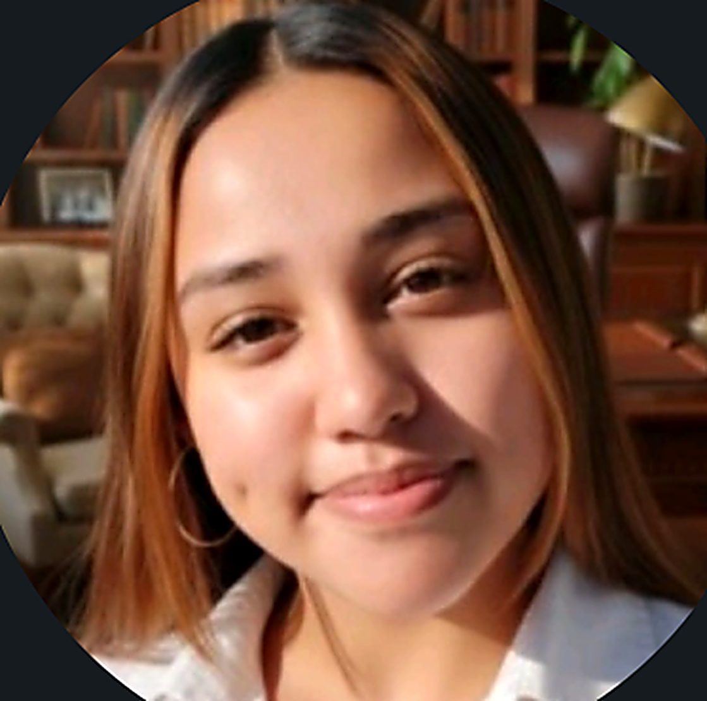

<title>Cassidy Vermeulen</title>
<meta name="claude:viewport-fit-sides" content="cover">
<link rel="preconnect" href="https://fonts.googleapis.com">
<link rel="preconnect" href="https://fonts.gstatic.com" crossorigin>
<link href="https://fonts.googleapis.com/css2?family=Unbounded:wght@400;600;700;800&family=IBM+Plex+Sans:wght@400;500;600&family=IBM+Plex+Mono:wght@400;500&display=swap" rel="stylesheet">
<style>
  /* layout concept: a vertical "timeline spine" running down the left margin of the long-form
     content, echoing the case-chronicle structure of the journey; hero + gallery break the
     spine into wide blocks, dark graphite ground with a single signal-amber accent */
  :root{
    --bg:#f5f7fa;
    --bg-raised:#ffffff;
    --bg-raised-2:#eef1f6;
    --fg:#11141c;
    --fg-muted:#4d566b;
    --fg-faint:#848da3;
    --accent:#2a4fb8;
    --accent-2:#6f93ff;
    --accent-ink:#ffffff;
    --border:#dde2ec;
    --border-soft:#e7eaf2;
    color-scheme:light;

    --font-display:'Unbounded',system-ui,-apple-system,Segoe UI,sans-serif;
    --font-body:'IBM Plex Sans',system-ui,-apple-system,Segoe UI,sans-serif;
    --font-mono:'IBM Plex Mono',ui-monospace,SFMono-Regular,Menlo,monospace;
  }
  @media (prefers-color-scheme: dark){
    :root:not([data-theme="light"]){
      --bg:#0a0d13;
      --bg-raised:#121722;
      --bg-raised-2:#1a2130;
      --fg:#eef1f7;
      --fg-muted:#8d94a8;
      --fg-faint:#5b6275;
      --accent:#4f8dff;
      --accent-2:#7cc7ff;
      --accent-ink:#05101f;
      --border:#232a3a;
      --border-soft:#161b26;
      color-scheme:dark;
    }
  }
  :root[data-theme="dark"]{
    --bg:#0a0d13;
    --bg-raised:#121722;
    --bg-raised-2:#1a2130;
    --fg:#eef1f7;
    --fg-muted:#8d94a8;
    --fg-faint:#5b6275;
    --accent:#4f8dff;
    --accent-2:#7cc7ff;
    --accent-ink:#05101f;
    --border:#232a3a;
    --border-soft:#161b26;
    color-scheme:dark;
  }
  :root[data-theme="light"]{
    --bg:#f5f7fa;
    --bg-raised:#ffffff;
    --bg-raised-2:#eef1f6;
    --fg:#11141c;
    --fg-muted:#4d566b;
    --fg-faint:#848da3;
    --accent:#2a4fb8;
    --accent-2:#6f93ff;
    --accent-ink:#ffffff;
    --border:#dde2ec;
    --border-soft:#e7eaf2;
    color-scheme:light;
  }

  *{box-sizing:border-box}
  body{
    background:var(--bg);
    color:var(--fg);
    font-family:var(--font-body);
    font-size:16px;
    line-height:1.55;
    padding-left:max(0px, env(safe-area-inset-left, 0px));
    padding-right:max(0px, env(safe-area-inset-right, 0px));
  }
  body::before{
    content:"";
    position:fixed;
    inset:0 0 auto;
    height:env(safe-area-inset-top, 0px);
    z-index:20;
    background:var(--bg-raised);
  }
  h1,h2,h3{font-family:var(--font-display);font-weight:600;text-wrap:balance;margin:0}
  p{margin:0}
  a{color:inherit}
  img{max-width:100%;display:block}
  ::selection{background:var(--accent);color:var(--accent-ink)}
  @media (prefers-reduced-motion: reduce){
    *{animation-duration:0.001ms !important;transition-duration:0.001ms !important;scroll-behavior:auto !important}
  }
  html{scroll-behavior:smooth}

  .wrap{
    max-width:1040px;
    margin:0 auto;
    padding-left:max(20px, env(safe-area-inset-left, 0px));
    padding-right:max(20px, env(safe-area-inset-right, 0px));
  }

  /* ---------- nav ---------- */
  .nav{
    position:sticky;
    top:env(safe-area-inset-top, 0px);
    z-index:15;
    background:color-mix(in srgb, var(--bg-raised) 92%, transparent);
    backdrop-filter:blur(10px);
    border-bottom:1px solid var(--border-soft);
  }
  .nav-inner{
    max-width:1040px;
    margin:0 auto;
    padding:14px max(20px, env(safe-area-inset-left, 0px)) 14px max(20px, env(safe-area-inset-right, 0px));
    display:flex;
    align-items:center;
    justify-content:space-between;
    gap:16px;
  }
  .nav-mark{
    font-family:var(--font-mono);
    font-size:13px;
    letter-spacing:0.02em;
    font-weight:500;
    white-space:nowrap;
    text-decoration:none;
  }
  .nav-mark b{color:var(--accent);font-weight:500}
  .nav-end{display:flex;align-items:center;gap:24px}
  .nav-links{
    display:flex;
    gap:22px;
    list-style:none;
    margin:0;
    padding:0;
  }
  .nav-links a{
    font-size:13px;
    text-decoration:none;
    color:var(--fg-muted);
    font-family:var(--font-mono);
    letter-spacing:0.01em;
    transition:color .15s ease;
    white-space:nowrap;
  }
  .nav-links a:hover, .nav-links a.active{color:var(--fg)}
  .nav-links a.active{color:var(--accent)}
  .nav-toggle{
    display:none;
    background:none;
    border:1px solid var(--border);
    color:var(--fg);
    border-radius:6px;
    width:36px;height:36px;
    font-family:var(--font-mono);
    font-size:16px;
    cursor:pointer;
    flex:none;
  }
  .nav-right{display:flex;align-items:center;gap:12px}
  .theme-toggle{
    display:flex;align-items:center;justify-content:center;
    width:34px;height:34px;
    border-radius:50%;
    border:1px solid var(--border);
    background:var(--bg-raised);
    color:var(--fg-muted);
    cursor:pointer;
    flex:none;
    transition:color .15s ease, border-color .15s ease, transform .15s ease;
  }
  .theme-toggle:hover{color:var(--accent);border-color:var(--accent);transform:translateY(-1px)}
  .theme-toggle svg{width:16px;height:16px}
  .theme-toggle [hidden]{display:none}
  @media (max-width:680px){
    .nav-links{
      position:fixed;
      inset:calc(env(safe-area-inset-top, 0px) + 57px) 0 auto 0;
      flex-direction:column;
      background:var(--bg-raised);
      border-bottom:1px solid var(--border-soft);
      padding:18px max(20px, env(safe-area-inset-left, 0px));
      gap:16px;
      transform:translateY(-110%);
      transition:transform .22s ease;
    }
    .nav-links.open{transform:translateY(0)}
    .nav-toggle{display:block}
  }

  /* ---------- hero ---------- */
  .hero{padding:56px 0 48px}
  .hero-grid{
    display:grid;
    grid-template-columns:1.2fr 1fr;
    gap:40px;
    align-items:center;
  }
  @media (max-width:760px){.hero-grid{grid-template-columns:1fr}}
  .eyebrow{
    font-family:var(--font-mono);
    font-size:12px;
    letter-spacing:0.08em;
    text-transform:uppercase;
    color:var(--accent);
    margin-bottom:14px;
    display:block;
  }
  .hero h1{font-size:clamp(2.4rem, 5.5vw, 3.6rem);line-height:1.04;letter-spacing:-0.01em}
  .hero-sub{
    margin-top:18px;
    font-size:1.1rem;
    color:var(--fg-muted);
    max-width:46ch;
  }
  .hero-meta{
    margin-top:22px;
    font-family:var(--font-mono);
    font-size:12.5px;
    color:var(--fg-faint);
    display:flex;
    flex-wrap:wrap;
    gap:8px 0;
  }
  .hero-meta span:not(:last-child)::after{content:" · ";color:var(--border)}
  .hero-cta{display:flex;gap:12px;margin-top:30px;flex-wrap:wrap}
  .btn{
    font-family:var(--font-mono);
    font-size:13px;
    letter-spacing:0.01em;
    padding:11px 20px;
    border-radius:4px;
    text-decoration:none;
    display:inline-flex;
    align-items:center;
    gap:8px;
    border:1px solid var(--border);
    cursor:pointer;
    background:none;
    color:var(--fg);
  }
  .btn-primary{background:var(--accent);color:var(--accent-ink);border-color:var(--accent);font-weight:500}
  .btn:hover{border-color:var(--fg-faint)}
  .btn-primary:hover{filter:brightness(1.06)}

  /* ---------- 3D orbit visual ---------- */
  .hero{position:relative;overflow:hidden}
  .hero::before{
    content:"";
    position:absolute;
    left:50%;top:58%;
    width:160%;height:560px;
    background-image:
      repeating-linear-gradient(0deg, color-mix(in srgb, var(--accent) 18%, transparent) 0 1px, transparent 1px 46px),
      repeating-linear-gradient(90deg, color-mix(in srgb, var(--accent) 18%, transparent) 0 1px, transparent 1px 46px);
    transform:translate(-50%,0) perspective(420px) rotateX(72deg);
    -webkit-mask-image:radial-gradient(ellipse 58% 60% at 50% 25%, black 0%, transparent 72%);
    mask-image:radial-gradient(ellipse 58% 60% at 50% 25%, black 0%, transparent 72%);
    opacity:.55;
    pointer-events:none;
    z-index:0;
  }
  .hero-grid{position:relative;z-index:1}

  .hero-avatar-wrap{position:relative;display:flex;justify-content:center;align-items:center;padding:20px}
  .avatar-glow{
    position:absolute;
    width:112%;height:112%;
    border-radius:50%;
    background:radial-gradient(circle, color-mix(in srgb, var(--accent) 38%, transparent), transparent 72%);
    filter:blur(18px);
    animation:pulseGlow 6s ease-in-out infinite;
  }
  @keyframes pulseGlow{
    0%,100%{opacity:.45;transform:scale(1)}
    50%{opacity:.8;transform:scale(1.06)}
  }
  .hero-avatar{
    position:relative;
    z-index:1;
    width:min(300px, 62vw);
    aspect-ratio:1/1;
    border-radius:50%;
    overflow:hidden;
    border:3px solid var(--bg-raised);
    box-shadow:0 0 0 1px var(--border), 0 24px 48px -24px rgba(0,0,0,.55);
  }
  .hero-avatar img{width:100%;height:100%;object-fit:cover}

  .orbit-wrap{
    display:flex;justify-content:center;align-items:center;
    padding:30px 20px 10px;
    perspective:1100px;
  }
  .orbit-tilt{
    transform-style:preserve-3d;
    transition:transform .35s cubic-bezier(.16,.8,.3,1);
  }
  .orbit-stage{
    position:relative;
    width:min(320px, 64vw);
    height:min(320px, 64vw);
    transform-style:preserve-3d;
    animation:orbitSpin 26s linear infinite;
  }
  @keyframes orbitSpin{
    from{transform:rotateX(16deg) rotateY(0deg)}
    to{transform:rotateX(16deg) rotateY(360deg)}
  }
  .orbit-core{
    position:absolute;inset:0;margin:auto;
    width:clamp(60px,16vw,86px);height:clamp(60px,16vw,86px);
    border-radius:50%;
    background:radial-gradient(circle at 34% 30%, var(--accent-2), var(--accent) 55%, color-mix(in srgb, var(--accent) 65%, black 30%));
    box-shadow:0 0 50px 8px color-mix(in srgb, var(--accent) 45%, transparent), inset 0 0 16px rgba(255,255,255,.25);
  }
  .orbit-ring{
    position:absolute;inset:0;
    transform-style:preserve-3d;
    transform:rotateY(calc(var(--n) * 60deg));
  }
  .orbit-node{
    position:absolute;top:50%;left:50%;
    transform:translate(-50%,-50%) translateZ(clamp(90px,22vw,150px));
    background:color-mix(in srgb, var(--bg-raised) 88%, transparent);
    backdrop-filter:blur(6px);
    border:1px solid var(--border);
    border-radius:20px;
    padding:8px 14px;
    font-family:var(--font-mono);font-size:11.5px;color:var(--fg);
    white-space:nowrap;
    box-shadow:0 10px 22px -12px rgba(0,0,0,.5);
  }

  /* ---------- tilt cards ---------- */
  .tilt-card{transition:transform .25s ease, box-shadow .25s ease;will-change:transform}
  .tilt-card:hover{box-shadow:0 22px 44px -26px rgba(0,0,0,.55)}

  @keyframes heroIn{
    from{opacity:0;transform:translateY(14px)}
    to{opacity:1;transform:none}
  }
  .hero-animate{opacity:0;animation:heroIn .7s cubic-bezier(.16,.8,.3,1) forwards}
  .hero .eyebrow{animation-delay:.02s}
  .hero h1{animation-delay:.08s}
  .hero-sub{animation-delay:.16s}
  .hero-meta{animation-delay:.24s}
  .hero-cta{animation-delay:.32s}
  .hero-avatar-wrap{animation-delay:.1s}

  /* ---------- scroll reveal ---------- */
  .reveal{transition:opacity .6s cubic-bezier(.16,.8,.3,1), transform .6s cubic-bezier(.16,.8,.3,1)}
  .reveal.will-animate{opacity:0;transform:translateY(18px)}
  .reveal.in{opacity:1;transform:none}

  .chip{transition:transform .15s ease, border-color .15s ease}
  .chip:hover{transform:translateY(-2px);border-color:var(--accent)}
  .value{transition:background .2s ease}
  .value:hover{background:var(--bg-raised)}
  .tl-item::before{transition:transform .2s ease}
  .tl-item:hover::before{transform:scale(1.3)}

  /* ---------- section shell ---------- */
  section{padding:64px 0;border-top:1px solid var(--border-soft)}
  .section-head{
    display:flex;
    align-items:baseline;
    justify-content:space-between;
    gap:16px;
    margin-bottom:38px;
    flex-wrap:wrap;
  }
  .section-num{
    font-family:var(--font-mono);
    font-size:12px;
    color:var(--fg-faint);
    letter-spacing:0.06em;
  }
  .section-head h2{font-size:clamp(1.5rem,3vw,2rem)}

  /* ---------- about ---------- */
  .lede{font-size:1.2rem;font-family:var(--font-display);font-weight:400;max-width:58ch;line-height:1.4}
  .about-body{margin-top:22px;max-width:62ch;color:var(--fg-muted);display:flex;flex-direction:column;gap:14px}
  .pull{
    margin-top:28px;
    padding-left:18px;
    border-left:2px solid var(--accent);
    font-family:var(--font-body);
    font-style:italic;
    font-weight:500;
    font-size:1.1rem;
    color:var(--fg);
    max-width:52ch;
  }

  /* ---------- timeline ---------- */
  .timeline{position:relative}
  .tl-item{
    position:relative;
    padding:0 0 40px 28px;
    border-left:1px solid var(--border);
  }
  .tl-item:last-child{border-left-color:transparent;padding-bottom:0}
  .tl-item::before{
    content:"";
    position:absolute;
    left:-5px;
    top:4px;
    width:9px;height:9px;
    border-radius:50%;
    background:var(--bg);
    border:2px solid var(--accent);
  }
  .tl-date{
    font-family:var(--font-mono);
    font-size:12.5px;
    color:var(--accent);
    letter-spacing:0.02em;
    margin-bottom:6px;
    display:block;
  }
  .tl-item h3{font-size:1.15rem;margin-bottom:4px}
  .tl-org{font-size:13.5px;color:var(--fg-faint);margin-bottom:10px;font-family:var(--font-mono)}
  .tl-item p{color:var(--fg-muted);max-width:60ch;font-size:15px}
  .tl-tags{display:flex;flex-wrap:wrap;gap:6px;margin-top:12px}
  .tl-tag{
    font-family:var(--font-mono);
    font-size:11px;
    padding:3px 8px;
    border-radius:3px;
    background:var(--bg-raised);
    border:1px solid var(--border);
    color:var(--fg-muted);
  }
  .tl-highlight{
    margin-top:12px;
    font-size:13.5px;
    color:var(--fg);
    background:var(--bg-raised);
    border:1px solid var(--border-soft);
    border-left:2px solid var(--accent);
    padding:10px 12px;
    border-radius:0 4px 4px 0;
    max-width:56ch;
  }

  /* ---------- current role ---------- */
  .role-card{
    background:var(--bg-raised);
    border:1px solid var(--border);
    border-radius:8px;
    padding:30px clamp(20px,4vw,40px);
    display:grid;
    grid-template-columns:1fr auto;
    gap:24px;
    align-items:start;
  }
  @media (max-width:600px){.role-card{grid-template-columns:1fr}}
  .role-tag{
    font-family:var(--font-mono);
    font-size:11.5px;
    letter-spacing:0.05em;
    text-transform:uppercase;
    color:var(--accent);
    background:color-mix(in srgb, var(--accent) 14%, transparent);
    padding:4px 9px;
    border-radius:3px;
    display:inline-block;
    margin-bottom:14px;
  }
  .role-card h3{font-size:1.35rem;margin-bottom:6px}
  .role-card .tl-org{margin-bottom:16px}
  .role-card p{color:var(--fg-muted);max-width:58ch;margin-bottom:12px}
  .role-list{list-style:none;margin:14px 0 0;padding:0;display:grid;gap:9px}
  .role-list li{
    font-size:14px;
    color:var(--fg-muted);
    padding-left:16px;
    position:relative;
  }
  .role-list li::before{content:"\2022";position:absolute;left:0;color:var(--fg-faint)}
  .role-list b{color:var(--fg);font-weight:600}

  /* ---------- skills ---------- */
  .skill-groups{display:grid;grid-template-columns:repeat(2,1fr);gap:28px 40px}
  @media (max-width:680px){.skill-groups{grid-template-columns:1fr}}
  .skill-group{
    background:var(--bg-raised);
    border:1px solid var(--border);
    border-radius:10px;
    padding:22px 24px;
  }
  .skill-group h3{
    font-family:var(--font-mono);
    font-size:12.5px;
    text-transform:uppercase;
    letter-spacing:0.05em;
    color:var(--fg-faint);
    font-weight:500;
    margin-bottom:14px;
    padding-bottom:10px;
    border-bottom:1px solid var(--border-soft);
  }

  /* ---------- impact ---------- */
  .impact-grid{display:grid;grid-template-columns:repeat(4,1fr);gap:16px}
  @media (max-width:760px){.impact-grid{grid-template-columns:repeat(2,1fr)}}
  @media (max-width:460px){.impact-grid{grid-template-columns:1fr}}
  .impact-tile{
    background:var(--bg-raised);
    border:1px solid var(--border);
    border-radius:10px;
    padding:26px 22px;
    display:flex;
    flex-direction:column;
    gap:10px;
    transform-style:preserve-3d;
  }
  .impact-num{
    font-family:var(--font-display);
    font-weight:700;
    font-size:clamp(2.1rem,5vw,2.7rem);
    color:var(--accent);
    font-variant-numeric:tabular-nums;
    line-height:1;
  }
  .impact-label{font-size:13.5px;color:var(--fg-muted);max-width:30ch}
  .chip-row{display:flex;flex-wrap:wrap;gap:8px}
  .chip{
    font-size:13.5px;
    padding:6px 12px;
    border-radius:16px;
    border:1px solid var(--border);
    color:var(--fg);
    background:var(--bg-raised);
  }

  /* ---------- values ---------- */
  .values{display:grid;grid-template-columns:repeat(2,1fr);gap:0;border:1px solid var(--border-soft);border-radius:8px;overflow:hidden}
  @media (max-width:680px){.values{grid-template-columns:1fr}}
  .value{
    padding:22px 24px;
    border-bottom:1px solid var(--border-soft);
    border-right:1px solid var(--border-soft);
  }
  .values .value:nth-child(2n){border-right:none}
  @media (max-width:680px){.values .value{border-right:none}}
  .value:nth-last-child(-n+2){border-bottom:none}
  .value-num{font-family:var(--font-mono);font-size:12px;color:var(--accent);margin-bottom:8px;display:block}
  .value h3{font-size:1rem;margin-bottom:6px}
  .value p{font-size:13.5px;color:var(--fg-muted)}

  /* ---------- next ---------- */
  .next-box{
    display:flex;
    flex-direction:column;
    gap:16px;
    max-width:68ch;
  }
  .next-box p{color:var(--fg-muted);font-size:15.5px}
  .next-tags{display:flex;flex-wrap:wrap;gap:8px;margin-top:6px}

  /* ---------- contact ---------- */
  .contact-row{
    display:flex;
    flex-wrap:wrap;
    gap:16px 32px;
    align-items:flex-end;
    justify-content:space-between;
  }
  .contact-block h2{font-size:clamp(1.8rem,4vw,2.6rem);max-width:16ch}
  .contact-sub{color:var(--fg-muted);margin-top:12px;max-width:48ch;font-size:15px}
  .contact-actions{display:flex;flex-direction:column;gap:12px;min-width:260px}
  .copy-field{
    display:flex;
    align-items:center;
    justify-content:space-between;
    gap:10px;
    border:1px solid var(--border);
    background:var(--bg-raised);
    border-radius:4px;
    padding:12px 14px;
    font-family:var(--font-mono);
    font-size:13.5px;
  }
  .copy-field button{
    font-family:var(--font-mono);
    font-size:11.5px;
    background:none;
    border:1px solid var(--border);
    color:var(--fg-muted);
    padding:5px 10px;
    border-radius:3px;
    cursor:pointer;
    flex:none;
  }
  .copy-field button:hover{color:var(--fg);border-color:var(--fg-faint)}
  .copy-field.copied button{color:var(--accent);border-color:var(--accent)}

  footer{
    padding:30px 0 max(30px, env(safe-area-inset-bottom, 0px));
    border-top:1px solid var(--border-soft);
    font-family:var(--font-mono);
    font-size:12px;
    color:var(--fg-faint);
    display:flex;
    justify-content:space-between;
    flex-wrap:wrap;
    gap:8px;
  }
  footer a{color:var(--fg-faint);text-decoration:none}
  footer a:hover{color:var(--fg)}
</style>

<script>try{var t0=localStorage.getItem('theme-pref');if(t0==='dark'||t0==='light'){document.documentElement.setAttribute('data-theme',t0);}}catch(e){}</script>
<nav class="nav">
  <div class="nav-inner">
    <a href="#top" class="nav-mark">Cassidy <b>Vermeulen</b></a>
    <div class="nav-end">
      <ul class="nav-links" id="navLinks">
        <li><a href="#about">About</a></li>
        <li><a href="#journey">Journey</a></li>
        <li><a href="#role">Current work</a></li>
        <li><a href="#skills">Skills</a></li>
        <li><a href="#impact">Impact</a></li>
        <li><a href="#contact">Contact</a></li>
      </ul>
      <div class="nav-right">
        <button class="theme-toggle" id="themeToggle" type="button" aria-label="Toggle light and dark mode">
          <svg id="iconSun" viewBox="0 0 24 24" fill="none" stroke="currentColor" stroke-width="2" stroke-linecap="round" stroke-linejoin="round" hidden><circle cx="12" cy="12" r="4"></circle><path d="M12 2v2M12 20v2M4.93 4.93l1.41 1.41M17.66 17.66l1.41 1.41M2 12h2M20 12h2M4.93 19.07l1.41-1.41M17.66 6.34l1.41-1.41"/></svg>
          <svg id="iconMoon" viewBox="0 0 24 24" fill="currentColor" hidden><path d="M21 12.79A9 9 0 1 1 11.21 3a7 7 0 0 0 9.79 9.79Z"/></svg>
        </button>
        <button class="nav-toggle" id="navToggle" aria-label="Toggle menu" aria-expanded="false">☰</button>
      </div>
    </div>
  </div>
</nav>

<main id="top">

  <header class="hero wrap">
    <div class="hero-grid">
      <div>
        <span class="eyebrow hero-animate">Software Developer · AI &amp; Robotics</span>
        <h1 class="hero-animate">Cassidy Vermeulen</h1>
        <p class="hero-sub hero-animate">I build software that starts with a real problem. My path to it ran through a community digital-access centre, a robotics pit, mentorship sessions and a pharmacy research lab. Not a straight line, but a consistent one.</p>
        <p class="hero-meta hero-animate">
          <span>Cape Town, South Africa</span>
          <span>Software Developer at UWC School of Pharmacy</span>
          <span>FTC Robotics · NEX GEN 28610</span>
        </p>
        <div class="hero-cta hero-animate">
          <a href="#journey" class="btn btn-primary">See the journey</a>
          <a href="#contact" class="btn">Get in touch</a>
        </div>
      </div>
      <div class="hero-avatar-wrap hero-animate">
        <span class="avatar-glow" aria-hidden="true"></span>
        <div class="hero-avatar">
          
        </div>
      </div>
    </div>
  </header>

  <section id="about">
    <div class="wrap">
      <div class="section-head">
        <h2>About</h2>
        <span class="section-num">01 · Summary</span>
      </div>
      <p class="lede reveal">A South African software developer and emerging technology innovator, moving from community digital support and robotics mentorship into formal software development and AI-focused work at the University of the Western Cape.</p>
      <div class="about-body reveal">
        <p>I didn't come into technology through one discipline. My experience has grown across community volunteering, education, robotics, software engineering and AI, with each stage shaping how I think about technology and the role I want to play in building it.</p>
        <p>Today I'm interested in the intersection of software engineering, AI, healthcare, robotics, product development and entrepreneurship: building the technical expertise to develop effective solutions, and the broader judgment to know which problems are worth solving.</p>
      </div>
      <p class="pull reveal">"My journey is still unfolding, and I am excited to see what I can build next."</p>
    </div>
  </section>

  <section id="journey">
    <div class="wrap">
      <div class="section-head">
        <h2>The journey</h2>
        <span class="section-num">02 · 2023 to present</span>
      </div>
      <div class="timeline">

        <div class="tl-item reveal">
          <span class="tl-date">2023 to 2025</span>
          <h3>Community Volunteer</h3>
          <span class="tl-org">Delft Nex-Indawo-Yethu eCentre, Cape Town</span>
          <p>Supported people navigating digital services at a community eCentre built to address barriers to ICT access. Gained a grounded understanding of digital inclusion. Access to a device is only one part of the equation; people also need the confidence and support to use it.</p>
        </div>

        <div class="tl-item reveal">
          <span class="tl-date">2024 to 2025</span>
          <h3>Technical Mentor &amp; Facilitator</h3>
          <span class="tl-org">MaxIQ · Bishop Lavis Library · HOPE Cape Town</span>
          <p>Helped other learners build technical skills and confidence by breaking concepts into manageable steps, encouraging experimentation, and learning to adapt explanations to the person in front of me rather than the textbook.</p>
        </div>

        <div class="tl-item reveal">
          <span class="tl-date">2025</span>
          <h3>Coder &amp; Technical Writer</h3>
          <span class="tl-org">FIRST Tech Challenge · NEX GEN 28610, The NEX, Delft</span>
          <p>Programmed sensor-based behaviour, PID control and autonomous navigation for a competitive robotics team, and wrote the engineering documentation behind it. Robotics made the feedback loop physical: a system either works against the real world or it doesn't.</p>
          <div class="tl-highlight">Team result: THINK Award for engineering portfolio · 6th at the Western Cape regional · 12th nationally at the Southern African championships · 420+ learners reached through outreach.</div>
          <div class="tl-tags"><span class="tl-tag">Sensors</span><span class="tl-tag">PID control</span><span class="tl-tag">Autonomous nav</span><span class="tl-tag">Technical writing</span></div>
        </div>

        <div class="tl-item reveal">
          <span class="tl-date">2025 to Feb 2026</span>
          <h3>N6: Digital Social Innovation &amp; Multi-Platform Software Development</h3>
          <span class="tl-org">UWC Samsung Future Innovation Lab</span>
          <p>Built a structured foundation in application architecture: how frontend, backend, data and APIs connect into one working system, across C#, .NET, ASP.NET Core, .NET MAUI, React, Node.js and SQL.</p>
          <div class="tl-tags"><span class="tl-tag">C# / .NET</span><span class="tl-tag">ASP.NET Core</span><span class="tl-tag">React</span><span class="tl-tag">Node.js</span><span class="tl-tag">SQL</span></div>
        </div>

        <div class="tl-item reveal">
          <span class="tl-date">2026</span>
          <h3>SANCS26 Cybersecurity Fundamentals</h3>
          <span class="tl-org">Continuing professional learning</span>
          <p>Broadened my understanding of the security considerations, such as data, permissions and infrastructure, that shape how reliable systems get designed.</p>
        </div>

        <div class="tl-item reveal">
          <span class="tl-date">Jan 2026 to Present</span>
          <h3>Software Developer</h3>
          <span class="tl-org">University of the Western Cape, School of Pharmacy</span>
          <p>My first professional role: contributing to application development, system integration and AI-related work inside a specialised academic research environment, where a feature is only useful once it fits the whole system around it.</p>
        </div>

        <div class="tl-item reveal">
          <span class="tl-date">2026 to Present</span>
          <h3>AI &amp; Cloud Development</h3>
          <span class="tl-org">Microsoft Azure AI · Microsoft Foundry</span>
          <p>Deepening my understanding of AI application patterns, including APIs, SDKs, multimodal interactions and responsible AI evaluation, while working toward the Microsoft AI certification pathway.</p>
        </div>

      </div>
    </div>
  </section>

  <section id="role">
    <div class="wrap">
      <div class="section-head">
        <h2>Current work</h2>
        <span class="section-num">03 · Present role</span>
      </div>
      <div class="role-card tilt-card reveal">
        <div>
          <span class="role-tag">Active</span>
          <h3>Software Developer</h3>
          <span class="tl-org">University of the Western Cape, School of Pharmacy · Jan 2026 to Present</span>
          <p>Research-focused software development is different from building an isolated app. It requires understanding the context a system operates in, the users it supports, and the architecture that holds it together. For confidentiality, this work is described at the level of focus rather than internal project detail.</p>
          <ul class="role-list">
            <li><b>Application development:</b> building and improving components within a larger application environment.</li>
            <li><b>System integration:</b> frontend interfaces, backend services, APIs and supporting technologies.</li>
            <li><b>AI-related development:</b> exploring how AI can support specialised research workflows.</li>
            <li><b>Documentation:</b> making systems and decisions understandable and maintainable.</li>
          </ul>
        </div>
      </div>
    </div>
  </section>

  <section id="skills">
    <div class="wrap">
      <div class="section-head">
        <h2>Skills &amp; tools</h2>
        <span class="section-num">04 · Toolkit</span>
      </div>
      <div class="orbit-wrap reveal" aria-hidden="true">
        <div class="orbit-tilt" id="orbitTilt">
          <div class="orbit-stage">
            <div class="orbit-core"></div>
            <div class="orbit-ring" style="--n:0"><div class="orbit-node">Software</div></div>
            <div class="orbit-ring" style="--n:1"><div class="orbit-node">AI</div></div>
            <div class="orbit-ring" style="--n:2"><div class="orbit-node">Robotics</div></div>
            <div class="orbit-ring" style="--n:3"><div class="orbit-node">Research</div></div>
            <div class="orbit-ring" style="--n:4"><div class="orbit-node">Community</div></div>
            <div class="orbit-ring" style="--n:5"><div class="orbit-node">Cloud</div></div>
          </div>
        </div>
      </div>
      <div class="skill-groups">
        <div class="skill-group tilt-card reveal">
          <h3>Programming &amp; Application Dev</h3>
          <div class="chip-row">
            <span class="chip">C#</span><span class="chip">.NET / ASP.NET Core</span><span class="chip">.NET MAUI</span>
            <span class="chip">JavaScript</span><span class="chip">React</span><span class="chip">Node.js</span>
            <span class="chip">SQL</span><span class="chip">REST APIs</span>
          </div>
        </div>
        <div class="skill-group tilt-card reveal">
          <h3>AI &amp; Cloud</h3>
          <div class="chip-row">
            <span class="chip">Microsoft Azure AI</span><span class="chip">Microsoft Foundry</span>
            <span class="chip">Multimodal AI</span><span class="chip">AI evaluation</span><span class="chip">Responsible AI</span>
          </div>
        </div>
        <div class="skill-group tilt-card reveal">
          <h3>Engineering Practice</h3>
          <div class="chip-row">
            <span class="chip">Git / GitHub</span><span class="chip">Visual Studio</span><span class="chip">Debugging &amp; testing</span>
            <span class="chip">Software architecture</span><span class="chip">Technical documentation</span>
          </div>
        </div>
        <div class="skill-group tilt-card reveal">
          <h3>Robotics &amp; Systems</h3>
          <div class="chip-row">
            <span class="chip">FTC robotics programming</span><span class="chip">Sensor systems</span>
            <span class="chip">PID control</span><span class="chip">Autonomous navigation</span>
          </div>
        </div>
      </div>
    </div>
  </section>

  <section id="impact">
    <div class="wrap">
      <div class="section-head">
        <h2>STEM &amp; community impact</h2>
        <span class="section-num">05 · By the numbers</span>
      </div>
      <div class="impact-grid">
        <div class="impact-tile tilt-card reveal">
          <span class="impact-num" data-count="420" data-suffix="+">0</span>
          <span class="impact-label">STEM learners reached through robotics outreach &amp; mentorship</span>
        </div>
        <div class="impact-tile tilt-card reveal">
          <span class="impact-num" data-count="3" data-suffix="+">0</span>
          <span class="impact-label">Years of community, mentorship &amp; technical impact, 2023 to present</span>
        </div>
        <div class="impact-tile tilt-card reveal">
          <span class="impact-num" data-count="5">0</span>
          <span class="impact-label">Organisations &amp; communities: eCentre, MaxIQ, Bishop Lavis Library, HOPE Cape Town, BabesGotBytes</span>
        </div>
        <div class="impact-tile tilt-card reveal">
          <span class="impact-num" data-count="1">0</span>
          <span class="impact-label">THINK Award for the FTC NEX GEN 28610 engineering portfolio</span>
        </div>
      </div>
    </div>
  </section>

  <section id="values">
    <div class="wrap">
      <div class="section-head">
        <h2>How I work</h2>
        <span class="section-num">06 · Values</span>
      </div>
      <div class="values">
        <div class="value reveal"><span class="value-num">01</span><h3>Technology should create opportunity</h3><p>Developed with an understanding of who it serves and what barriers it can help remove.</p></div>
        <div class="value reveal"><span class="value-num">02</span><h3>Learning should be practical</h3><p>Understanding a concept matters, but testing it and learning from the result is what builds real capability.</p></div>
        <div class="value reveal"><span class="value-num">03</span><h3>Documentation is part of engineering</h3><p>Explaining decisions and recording how a system develops supports collaboration and maintainability.</p></div>
        <div class="value reveal"><span class="value-num">04</span><h3>Responsible AI takes deliberate design</h3><p>Clear objectives, understood limitations, and appropriate human oversight, not an afterthought.</p></div>
        <div class="value reveal"><span class="value-num">05</span><h3>Collaboration makes better solutions</h3><p>Technical expertise is more effective combined with communication and domain knowledge.</p></div>
        <div class="value reveal"><span class="value-num">06</span><h3>Growth is ongoing</h3><p>Moving between environments and picking up new skills as the work demands them.</p></div>
      </div>
    </div>
  </section>

  <section id="next">
    <div class="wrap">
      <div class="section-head">
        <h2>What's next</h2>
        <span class="section-num">07 · Direction</span>
      </div>
      <div class="next-box reveal">
        <p>I want to deepen my knowledge of software engineering and applied AI while gaining practical experience building systems that solve real problems, with robotics as a natural continuation of the work I began through FIRST Tech Challenge, and AI evaluation as an area I want real depth in, not just exposure.</p>
        <p>I'm also drawn to the global technology landscape, especially China's robotics and technology industries. I've started learning Mandarin at an introductory level, and I'd like to explore international collaboration and study as my experience grows.</p>
        <div class="next-tags">
          <span class="chip">Applied AI evaluation</span><span class="chip">Robotics</span><span class="chip">Product &amp; AI solutions</span><span class="chip">International study</span>
        </div>
      </div>
    </div>
  </section>

  <section id="contact">
    <div class="wrap">
      <div class="contact-row">
        <div class="contact-block reveal">
          <h2>Let's build something.</h2>
          <p class="contact-sub">Open to software development, AI engineering and robotics opportunities, collaborations and conversations.</p>
        </div>
        <div class="contact-actions reveal">
          <div class="copy-field" id="emailField">
            <span id="emailText">cassidyvermeulen007@gmail.com</span>
            <button id="copyBtn" type="button">Copy</button>
          </div>
          <a class="btn" href="https://www.linkedin.com/in/cassidy-vermeulen-46a3882b4" target="_blank" rel="noopener">LinkedIn profile →</a>
        </div>
      </div>
    </div>
  </section>

</main>

<footer class="wrap">
  <span>Cassidy Vermeulen · Cape Town, South Africa</span>
  <span>Software Development · Applied AI · Robotics</span>
</footer>

<script>
(function(){
  try{
    var root = document.documentElement;
    var themeBtn = document.getElementById('themeToggle');
    var iconSun = document.getElementById('iconSun');
    var iconMoon = document.getElementById('iconMoon');
    function currentTheme(){
      var attr = root.getAttribute('data-theme');
      if(attr) return attr;
      return (window.matchMedia && matchMedia('(prefers-color-scheme: dark)').matches) ? 'dark' : 'light';
    }
    function syncIcon(){
      var dark = currentTheme() === 'dark';
      iconSun.hidden = dark;
      iconMoon.hidden = !dark;
    }
    syncIcon();
    themeBtn.addEventListener('click', function(){
      var next = currentTheme() === 'dark' ? 'light' : 'dark';
      root.setAttribute('data-theme', next);
      try{ localStorage.setItem('theme-pref', next); }catch(e){}
      syncIcon();
    });
  }catch(e){}

  try{
    var toggle = document.getElementById('navToggle');
    var links = document.getElementById('navLinks');
    toggle.addEventListener('click', function(){
      var open = links.classList.toggle('open');
      toggle.setAttribute('aria-expanded', open ? 'true' : 'false');
    });
    links.querySelectorAll('a').forEach(function(a){
      a.addEventListener('click', function(){
        links.classList.remove('open');
        toggle.setAttribute('aria-expanded', 'false');
      });
    });
  }catch(e){}

  try{
    var sections = document.querySelectorAll('main section[id], header#top');
    var navAnchors = document.querySelectorAll('.nav-links a');
    var map = {};
    navAnchors.forEach(function(a){ map[a.getAttribute('href').slice(1)] = a; });
    var observer = new IntersectionObserver(function(entries){
      entries.forEach(function(entry){
        var id = entry.target.id;
        if(!map[id]) return;
        if(entry.isIntersecting){
          navAnchors.forEach(function(a){ a.classList.remove('active'); });
          map[id].classList.add('active');
        }
      });
    }, { rootMargin: '-45% 0px -50% 0px', threshold: 0 });
    sections.forEach(function(s){ observer.observe(s); });
  }catch(e){}

  try{
    if('IntersectionObserver' in window){
      var revealEls = document.querySelectorAll('.reveal');
      var counters = new Map();
      revealEls.forEach(function(el){
        var key = el.parentElement;
        var i = counters.get(key) || 0;
        el.style.transitionDelay = Math.min(i * 70, 280) + 'ms';
        counters.set(key, i + 1);
        el.classList.add('will-animate');
      });
      var reducedMotion = window.matchMedia && matchMedia('(prefers-reduced-motion: reduce)').matches;
      function countUp(el){
        var target = parseFloat(el.dataset.count);
        var suffix = el.dataset.suffix || '';
        if(reducedMotion || isNaN(target)){ el.textContent = target + suffix; return; }
        var start = null, dur = 1100;
        function step(ts){
          if(!start) start = ts;
          var p = Math.min((ts - start) / dur, 1);
          var eased = 1 - Math.pow(1 - p, 3);
          el.textContent = Math.round(target * eased) + suffix;
          if(p < 1) requestAnimationFrame(step);
        }
        requestAnimationFrame(step);
      }
      var revealObserver = new IntersectionObserver(function(entries, obs){
        entries.forEach(function(entry){
          if(entry.isIntersecting){
            entry.target.classList.add('in');
            obs.unobserve(entry.target);
            var numEl = entry.target.querySelector('.impact-num[data-count]');
            if(numEl) countUp(numEl);
          }
        });
      }, { rootMargin: '0px 0px -8% 0px', threshold: 0.12 });
      revealEls.forEach(function(el){ revealObserver.observe(el); });
    }
  }catch(e){}

  try{
    var reducedMotionTilt = window.matchMedia && matchMedia('(prefers-reduced-motion: reduce)').matches;
    if(!reducedMotionTilt){
      document.querySelectorAll('.tilt-card').forEach(function(card){
        card.addEventListener('pointermove', function(e){
          if(e.pointerType === 'touch') return;
          var r = card.getBoundingClientRect();
          var x = (e.clientX - r.left) / r.width - 0.5;
          var y = (e.clientY - r.top) / r.height - 0.5;
          card.style.transform = 'perspective(700px) rotateX(' + (-y * 7) + 'deg) rotateY(' + (x * 7) + 'deg) translateZ(2px)';
        });
        card.addEventListener('pointerleave', function(){
          card.style.transform = '';
        });
      });

      var orbitWrap = document.querySelector('.orbit-wrap');
      var orbitTilt = document.getElementById('orbitTilt');
      if(orbitWrap && orbitTilt){
        orbitWrap.addEventListener('pointermove', function(e){
          if(e.pointerType === 'touch') return;
          var r = orbitWrap.getBoundingClientRect();
          var x = (e.clientX - r.left) / r.width - 0.5;
          var y = (e.clientY - r.top) / r.height - 0.5;
          orbitTilt.style.transform = 'rotateX(' + (-y * 16) + 'deg) rotateY(' + (x * 16) + 'deg)';
        });
        orbitWrap.addEventListener('pointerleave', function(){
          orbitTilt.style.transform = '';
        });
      }
    }
  }catch(e){}

  try{
    var btn = document.getElementById('copyBtn');
    var field = document.getElementById('emailField');
    var email = document.getElementById('emailText').textContent;
    btn.addEventListener('click', function(){
      function done(){
        field.classList.add('copied');
        btn.textContent = 'Copied';
        setTimeout(function(){
          field.classList.remove('copied');
          btn.textContent = 'Copy';
        }, 1800);
      }
      if(navigator.clipboard && navigator.clipboard.writeText){
        navigator.clipboard.writeText(email).then(done).catch(function(){
          var range = document.createRange();
          range.selectNode(document.getElementById('emailText'));
          window.getSelection().removeAllRanges();
          window.getSelection().addRange(range);
        });
      }
    });
  }catch(e){}
})();
</script>
